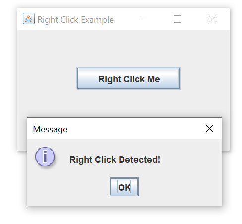
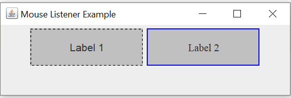
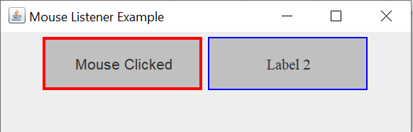
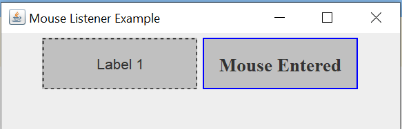
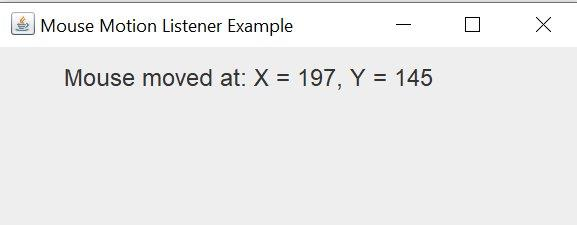
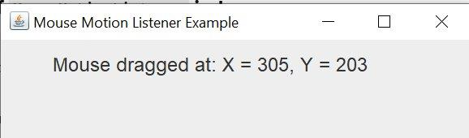

CS254 Visual Programming · Lecture 6
Mouse Events
Clicks, presses, hovers, drags, the wheel, double clicks and right clicks. Every slide of Lecture 6 – Mouse Events (24 slides) in order, with all code typed out from the screenshots. Use the mouse playground to watch each listener method fire, with its coordinates, button and click count.
Slides 1–6
Mouse listeners
Mouse Events 1
Slides adapted from slides of Marty Stepp based on materials by M. Ernst, S. Reges, D. Notkin, R. Mercer, Wikipedia — http://www.cs.washington.edu/331/
Mouse events 2
- Usage of mouse events:
- listen to clicks / movement of mouse in a component
- respond to mouse activity with appropriate actions
- create interactive programs that are driven by mouse activity
- Note that the listener is assigned to a component not to the mouse itself. It tracks the mouse only while it is inside the component.
Mouse Events
Triggered when a user interacts with the mouse.
- Source: JButton, JLabel, JPanel, etc.
- Event Class: MouseEvent
- Listener Interface: MouseListener, MouseMotionListener, MouseWheelListener
Mouse Events interfaces 3
- Often one is interested in the mouse buttons or in the mouse motion but not both.
- There are two listeners defined by the interfaces
MouseListenerandMouseMotionListenerin the AWT libraryjava.awt.event. MouseListeneris for handling the mouse buttons whileMouseMotionListenermonitors the motion.- To add a mouse listener to a Swing component "comp" use
comp.addMouseListener(MouseListener mouseListener);comp.addMouseMotionListener(MouseMotionListener motionListener);
MouseListener interface 4
public interface MouseListener {
public void mouseClicked(MouseEvent event);
public void mouseEntered(MouseEvent event);
public void mouseExited(MouseEvent event);
public void mousePressed(MouseEvent event);
public void mouseReleased(MouseEvent event);
}- Many AWT/Swing components have this method:
public void addMouseListener(MouseListener ml)
- Mouse listeners are often added to custom components and drawing canvases to respond to clicks and other mouse actions.
MouseListener Interface 5
mouseClicked(MouseEvent mevt)is automatically called by the runtime system when a mouse button is clicked. To find out which button was clicked one has to look at the MouseEvent object "mevt".mouseEntered(MouseEvent mevt)is automatically called by the runtime system if the mouse enters the component to which the listener is associated.mouseExited(MouseEvent mevt)is automatically called by the runtime system if the mouse leaves the component to which the listener is associated.mousePressed(MouseEvent mevt)is automatically called by the runtime system if a mouse button is pressed. To find out which button was pressed one has to look at the MouseEvent object "mevt".mouseReleased(MouseEvent mevt)is automatically called by the runtime system if a mouse button is released. To find out which button was released one has to look at the MouseEvent object "mevt".- A click results in calling three methods,
mousePressed,mouseReleasedandmouseClicked. - Interface
MouseListenerhas five such methods, all of which have to be implemented
// elsewhere, myComponent.addMouseListener(MouseListener mouseListener);
- Problem: Tedious to implement entire interface when only partial behavior is wanted / needed.
MouseMotionListener Interface 6
void mouseMoved(MouseEvent mevt) void mouseDragged(MouseEvent mevt)
mouseMoved(MouseEvent mevt)is automatically called if the mouse is moved while it is in a component that the listener is associated to.- The new mouse position can be found by analyzing the event object "mevt".
- The mouse is 'moved' if the runtime system receives a signal from the mouse.
- Usually this results in a change of the position of the mouse pointer on the screen by at least one pixel.
mouseDragged(MouseEvent mevt)is automatically called if the mouse is moved while a mouse button is pressed.- Interface
MouseMotionListenerhas two methods, all of which have to be implemented
// elsewhere, myComponent.addMouseMotionListener(MouseMotionListener motionListener);
Slides 7–14
MouseEvent and MouseAdapter
Mouse Event 7
- The methods described all receive a
(MouseEvent)as a parameter. This object contains information on what triggered the listener. - The following methods from the class
MouseEventshow where the event occurred. The x- and y coordinates are in pixels in the coordinate system of the component to which the listener is assigned.int getX()int getY()public Point getPoint()
- The following methods from the class
SwingUtilitiesare used to find out which button was used.- These methods return
trueif the button appearing in the method name is used, andfalseotherwise boolean SwingUtilities.isLeftMouseButton(MouseEvent me)boolean SwingUtilities.isMiddleMouseButton(MouseEvent me)boolean SwingUtilities.isRightMouseButton(MouseEvent me)
- These methods return
public static int BUTTON1_MASK, BUTTON2_MASK, BUTTON3_MASK, CTRL_MASK, ALT_MASK, SHIFT_MASKpublic Object getSource()public int getModifiers() // use *_MASK with thisint getClickCount()- This method is used to determine the number of clicks in a short period.
- The length of this period depends on the platform and can usually be set using utilities of the operating system.
- Then a double click can be checked by using
if(mevt.getClickCount() == 2)
An abstract event adapter 8
// This class exists in package java.awt.event.
// An empty implementation of all MouseListener methods.
public abstract class MouseAdapter implements MouseListener,
MouseMotionListener, MouseWheelListener {
public void mousePressed(MouseEvent event) {}
public void mouseReleased(MouseEvent event) {}
public void mouseClicked(MouseEvent event) {}
public void mouseEntered(MouseEvent event) {}
public void mouseExited(MouseEvent event) {}
public void mouseWheelMoved(MouseWheelEvent event){}
public void mouseMoved(MouseEvent mevt) {}
public void mouseDragged(MouseEvent mevt) {}
}- Now classes can extend
MouseAdapterrather than implementingMouseListener,MouseMotionListener, andMouseWheelListener.- gets the complete mouse listener interface it wants
- implementer gets to write just the few mouse methods they want
Writing an adapter 9
public class MyMouseAdapter extends MouseAdapter {
public void mousePressed(MouseEvent event) {
System.out.println("You pressed the button!");
}
}
// elsewhere,
myComponent.addMouseListener(new MyMouseAdapter());Using MouseEvent 10
public class MyMouseAdapter extends MouseAdapter {
public void mousePressed(MouseEvent event) {
Object source = event.getSource();
if (source == button && event.getX() < 10) {
JOptionPane.showMessageDialog(null,
"You clicked the left edge!");
}
}
}Mouse motion 11
- The abstract
MouseMotionAdapterclass provides empty implementations of both methods if you just want to override one.
Mouse wheel scrolling 12
public interface MouseWheelListener {
public void mouseWheelMoved(MouseWheelEvent event);
}- The third mouse event interface focuses on the rolling of the mouse's scroll wheel button.
- Many AWT/Swing components have this method:
public void addMouseWheelListener(MouseWheelListener ml)
Mouse input listener 13
// import javax.swing.event.*;
public interface MouseInputListener
extends MouseListener, MouseMotionListener
{}- The
MouseInputAdapterclass includes empty implementations for all methods from all mouse input interfaces, allowing the same listener object to listen to mouse clicks, movement, and/or wheel events.- Extends
MouseAdapter - Implements
MouseInputListener
- Extends
Mouse input example 14
public class MyMouseInputAdapter extends MouseInputAdapter {
public void mousePressed(MouseEvent event) {
System.out.println("Mouse was pressed");
}
public void mouseDragged(MouseEvent event) {
Point p = event.getPoint();
System.out.println("Mouse is at " + p);
}
}
...
// using the listener
MyMouseInputAdapter adapter = new MyMouseInputAdapter();
myPanel.addMouseListener(adapter);
myPanel.addMouseMotionListener(adapter);Added · interactive
Mouse playground
This grey panel has a MouseListener, a MouseMotionListener and a MouseWheelListener. Move over it, click, double-click, right-click, drag, scroll. Untick a listener to "unregister" it and see which methods stop firing.
Slides 20–25
Listener vs adapter, double and right click
Example of Java Listener 20
import java.awt.*;
import java.awt.event.*;
public class ListenerExample extends Frame
implements MouseListener {
ListenerExample() {
addMouseListener(this); // Registering the listener
setSize(300, 300);
setLayout(null);
setVisible(true);
}
public void mouseClicked(MouseEvent e) {
System.out.println("Mouse Clicked");
}
public void mousePressed(MouseEvent e) {}
public void mouseReleased(MouseEvent e) {}
public void mouseEntered(MouseEvent e) {}
public void mouseExited(MouseEvent e) {}
public static void main(String[] args) {
new ListenerExample(); }}Using MouseAdapter class 21
Advantage: No need to implement unused methods, making the code cleaner and more readable.
import java.awt.*;
import java.awt.event.*;
public class AdapterExample extends Frame {
AdapterExample() {
addMouseListener(new MouseAdapter() {
public void mouseClicked(MouseEvent e) {
System.out.println("Mouse Clicked");
}
});
setSize(300, 300);
setLayout(null);
setVisible(true);
}
public static void main(String[] args) {
new AdapterExample();
}
}Handling Double Click and Right Click in Java Swing 22–23
Java Swing does not provide direct support for double-click or right-click events using ActionListener. Instead, you need to use a MouseListener to detect different mouse actions.
1. Handling Double Click Events
To detect a double-click, you need to use MouseListener and check the click count.
Example: Detecting Double Click
import javax.swing.*;
import java.awt.event.*;
public class DoubleClickExample extends JFrame {
public DoubleClickExample() {
setTitle("Double Click Example");
setSize(300, 200);
setDefaultCloseOperation(JFrame.EXIT_ON_CLOSE);
setLayout(null);
JButton button = new JButton("Double Click Me");
button.setBounds(80, 50, 140, 30);
button.addMouseListener(new MouseAdapter() {
public void mouseClicked(MouseEvent e) {
if (e.getClickCount() == 2) { // Detect double click
JOptionPane.showMessageDialog(DoubleClickExample.this, "Button Double-Clicked!");
}
}
});
add(button);
setVisible(true);
}
public static void main(String[] args) {
new DoubleClickExample();
}
}Explanation
e.getClickCount() == 2→ Detects if the user clicked twice rapidly.- Uses MouseAdapter instead of MouseListener to avoid overriding unnecessary methods.
2. Handling Right-Click (Context Menu) 24–25
To detect a right-click, check if the mouse button pressed is BUTTON3 (right mouse button).
public class RightClickExample extends JFrame {
public RightClickExample() {
setTitle("Right Click Example");
setSize(300, 200);
setDefaultCloseOperation(JFrame.EXIT_ON_CLOSE);
setLayout(null);
JButton button = new JButton("Right Click Me");
button.setBounds(80, 50, 140, 30);
button.addMouseListener(new MouseAdapter() {
public void mousePressed(MouseEvent e) {
if (SwingUtilities.isRightMouseButton(e)) { // Detect right click
JOptionPane.showMessageDialog(RightClickExample.this, "Right Click Detected!");
}
}
});
add(button);
setVisible(true);
}
public static void main(String[] args) {
new RightClickExample();
}
}
Explanation
SwingUtilities.isRightMouseButton(e)→ Checks if the right mouse button is clicked.mousePressed(MouseEvent e)is used instead ofmouseClicked()because some OS settings may not register right clicks withmouseClicked().
Slides 28–29
Exercise: two labels, five events
Example 28
Implement a Java Swing application that demonstrates the use of mouse event handling on two JLabel components using the MouseListener interface. The application should dynamically update the UI based on user interactions.
Summary of Expected Behavior for Each Mouse Event:
| Mouse Event | Label 1 (Border Update) | Label 2 (Font Update) |
|---|---|---|
| mouseClicked | Change border to red solid | Font changes to Verdana, Bold, 16px |
| mousePressed | Change border to green solid | Font size increases to 18px |
| mouseReleased | Change border to orange dashed | Font changes to Courier New, Italic |
| mouseEntered | Change border to cyan etched | Font changes to Serif, Bold, 18px |
| mouseExited | Reset border to default dashed | Reset font to Times New Roman, 14px |
Expected output 29



Try it: the two labels
AddedAdded · A solution
Show MouseListenerExample.java
import javax.swing.*;
import javax.swing.border.Border;
import java.awt.*;
import java.awt.event.*;
public class MouseListenerExample extends JFrame {
private final Border defaultBorder = BorderFactory.createDashedBorder(Color.GRAY);
private final Font defaultFont = new Font("Times New Roman", Font.PLAIN, 14);
public MouseListenerExample() {
super("Mouse Listener Example");
setLayout(new FlowLayout());
JLabel label1 = new JLabel("Label 1", SwingConstants.CENTER);
JLabel label2 = new JLabel("Label 2", SwingConstants.CENTER);
for (JLabel l : new JLabel[] {label1, label2}) {
l.setPreferredSize(new Dimension(120, 40));
l.setOpaque(true);
l.setBackground(Color.LIGHT_GRAY);
}
label1.setBorder(defaultBorder);
label2.setBorder(BorderFactory.createLineBorder(Color.BLUE));
label2.setFont(defaultFont);
// Label 1: border changes
label1.addMouseListener(new MouseListener() {
public void mouseClicked(MouseEvent e) {
label1.setBorder(BorderFactory.createLineBorder(Color.RED, 2));
label1.setText("Mouse Clicked");
}
public void mousePressed(MouseEvent e) {
label1.setBorder(BorderFactory.createLineBorder(Color.GREEN, 2));
}
public void mouseReleased(MouseEvent e) {
label1.setBorder(BorderFactory.createDashedBorder(Color.ORANGE, 2, 5, 3, false));
}
public void mouseEntered(MouseEvent e) {
label1.setBorder(BorderFactory.createEtchedBorder(Color.CYAN, Color.DARK_GRAY));
}
public void mouseExited(MouseEvent e) {
label1.setBorder(defaultBorder);
label1.setText("Label 1");
}
});
// Label 2: font changes
label2.addMouseListener(new MouseListener() {
public void mouseClicked(MouseEvent e) {
label2.setFont(new Font("Verdana", Font.BOLD, 16));
}
public void mousePressed(MouseEvent e) {
label2.setFont(label2.getFont().deriveFont(18f)); // same font, size 18
}
public void mouseReleased(MouseEvent e) {
label2.setFont(new Font("Courier New", Font.ITALIC, label2.getFont().getSize()));
}
public void mouseEntered(MouseEvent e) {
label2.setFont(new Font("Serif", Font.BOLD, 18));
label2.setText("Mouse Entered");
}
public void mouseExited(MouseEvent e) {
label2.setFont(defaultFont);
label2.setText("Label 2");
}
});
add(label1);
add(label2);
setSize(320, 120);
setDefaultCloseOperation(JFrame.EXIT_ON_CLOSE);
setVisible(true);
}
public static void main(String[] args) {
new MouseListenerExample();
}
}One click fires pressed → released → clicked, so the label ends up with the clicked style. createDashedBorder needs Java 7 or newer.
Slides 36–37
Button constants and motion tracking
Mouse Button Constants 36
- MouseEvent.BUTTON1 (value = 1)
- Represents the left mouse button (usually the primary button).
- It is used for actions like clicking, selecting, or dragging.
- Usage Example:
In most cases, BUTTON1 refers to a left-click, for example:if (e.getButton() == MouseEvent.BUTTON1) { // Handle left button click or drag }
- MouseEvent.BUTTON2 (value = 2)
- Represents the middle mouse button (typically the wheel button on most mice).
- Often used for scrolling, or for some applications, like opening links in new tabs.
- Usage Example:
BUTTON2 could be used for special functions such as middle-clicking:if (e.getButton() == MouseEvent.BUTTON2) { // Handle middle button click }
- MouseEvent.BUTTON3 (value = 3)
- Represents the right mouse button.
- This is typically used for context menus (right-click).
- Usage Example:
BUTTON3 could trigger a context menu or secondary actions:if (e.getButton() == MouseEvent.BUTTON3) { // Handle right button click (e.g., context menu) }
Example 37
Implement a Java GUI application that captures and displays mouse movement and dragging events using MouseMotionListener. The application will allow real-time tracking of the mouse's position when the user moves or drags the mouse inside a window.


Added · Show a solution
import javax.swing.*;
import java.awt.*;
import java.awt.event.*;
public class MouseMotionExample extends JFrame implements MouseMotionListener {
private JLabel label = new JLabel("Move or drag the mouse");
public MouseMotionExample() {
super("Mouse Motion Listener Example");
setLayout(new FlowLayout(FlowLayout.LEFT, 20, 10));
label.setFont(new Font("Arial", Font.PLAIN, 14));
add(label);
getContentPane().addMouseMotionListener(this); // listen on the content pane
setSize(400, 200);
setDefaultCloseOperation(JFrame.EXIT_ON_CLOSE);
setVisible(true);
}
public void mouseMoved(MouseEvent e) {
label.setText("Mouse moved at: X = " + e.getX() + ", Y = " + e.getY());
}
public void mouseDragged(MouseEvent e) {
label.setText("Mouse dragged at: X = " + e.getX() + ", Y = " + e.getY());
}
public static void main(String[] args) {
new MouseMotionExample();
}
}Both methods must be written because the class implements the interface. The playground above shows the same thing live.
All of Lecture 6
Flashcards
Tap the card to flip it. Each answer names the slide it comes from.